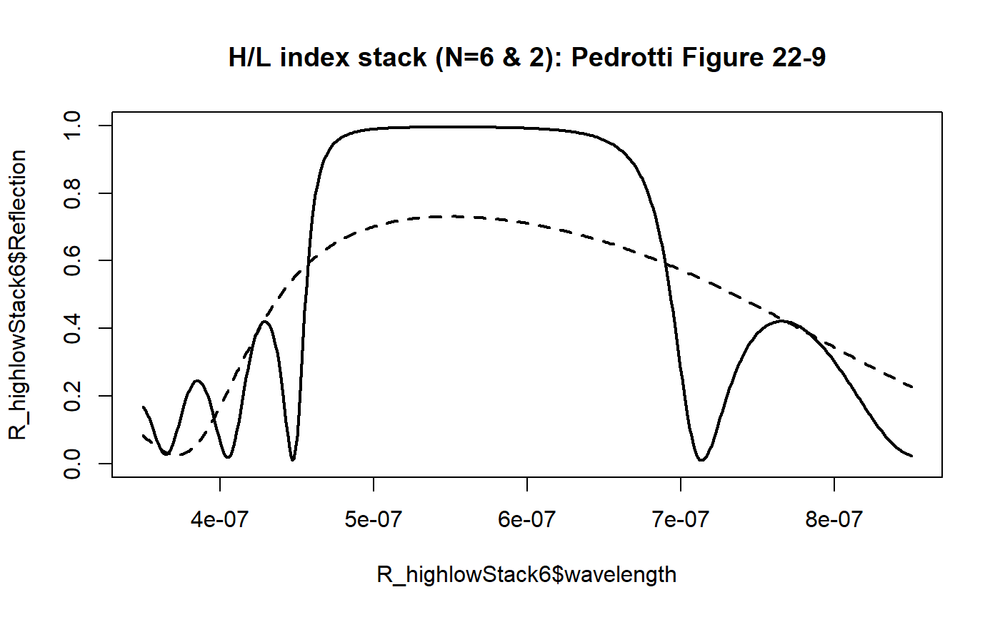
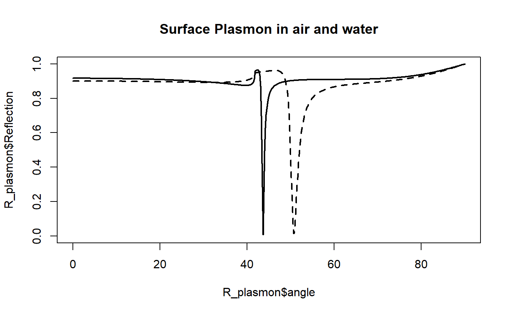
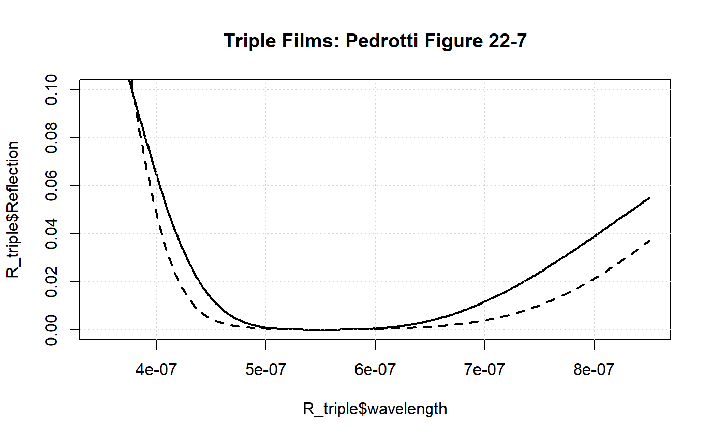
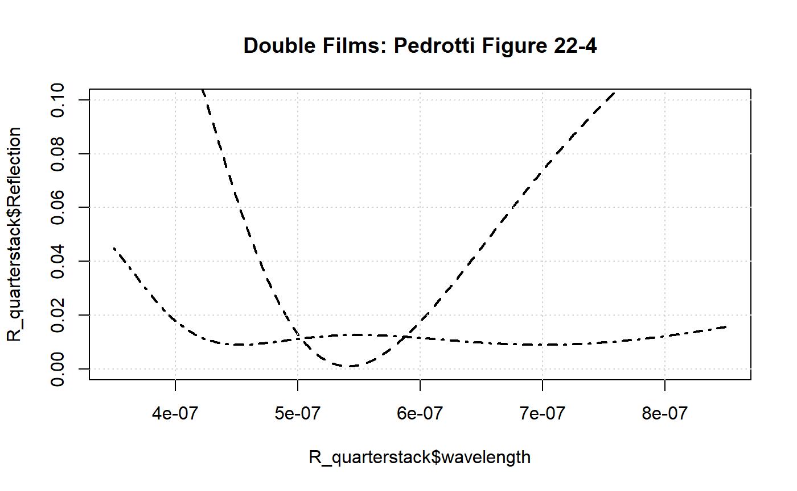

The mlfilms package was originally written as an example package to encourage undergraduate physics students to develop, or at least acquire a basic working knowledge of how to program the Transfer Matrix Method. As such, the base code for mlfilms follows, as close as possible, the naming and variable conventions from the recommended undergraduate text for Exeter university undergraduates; Pedrotti, Pedrotti & Pedrotti’s Introduction to Optics1.
The package has since been abstracted a little too far for an introductory coding experience for new physics students, but the examples from the text are reproduced here for historical reasons. Reproducing these examples (mostly figures from the text) was the final step to ensure students own code was working correctly.
library(mlfilms)layers<-list(index=c(2.35+0i,1.38+0i),thickness=c(550e-9/(4*2.35),550e-9/(4*1.38)),repetitions=6)
R_highlowStack6<-wavelength_scan(incident_medium.index=1+0i,exit_medium.index=1.52+0i,layers=layers)
plot(R_highlowStack6$wavelength,R_highlowStack6$Reflection,type='l',lwd=2, ylim=c(0,1))
title("H/L index stack (N=6 & 2): Pedrotti Figure 22-9")
layers$repetitions<-2
R_highlowStack2<-wavelength_scan(incident_medium.index=1+0i,exit_medium.index=1.52+0i,layers=layers)
lines(R_highlowStack2$wavelength, R_highlowStack2$Reflection,lty=2,lwd=2)
layers<-list(index=c(0.13+4i),thickness=c(45e-9),repetitions= 1)
R_plasmon<-angle_scan(incident_medium.index=1.5+0i,exit_medium.index=1+0i,layers=layers)
plot(R_plasmon$angle,R_plasmon$Reflection,type='l',lwd=2, ylim=c(0,1))
title("Surface Plasmon in air and water")
layers$index<-c(0.13+4i,1.33+0i)
layers$thickness<-c(45e-9,60e-9)
layers$repetitions<-1
R_plasmon2<-angle_scan(incident_medium.index=1.5+0i,exit_medium.index=1+0i,layers=layers)
lines(R_plasmon2$angle,R_plasmon2$Reflection,lwd=2,lty=2)
layers=list(index=c(1.38+0i,2.02+0i,1.8+0i),thickness=c(550e-9/(4*1.38),550e-9/(4*2.02),550e-9/(4*1.8)),repetitions=1)
R_triple<-wavelength_scan(incident_medium.index=1+0i,exit_medium.index=1.52+0i,layers=layers)
plot(R_triple$wavelength,R_triple$Reflection,type='l',lwd=2, ylim=c(0,0.1));grid()
title("Triple Films: Pedrotti Figure 22-7")
layers$index<-c(1.38+0i,2.2+0i,1.7+0i)
layers$thickness<-c(550e-9/(4*1.38),550e-9/(2*2.2),550e-9/(4*1.7))
R_triple2<-wavelength_scan(incident_medium.index=1+0i,exit_medium.index=1.52+0i,layers=layers)
lines(R_triple2$wavelength,R_triple2$Reflection,lty=2,lwd=2)
layers<-list(index=c(1.65+0i,2.1+0i),thickness=c(550e-9/(4*1.65),550e-9/(4*2.2)),repetitions=1)
R_quarterstack<-wavelength_scan(incident_medium.index=1+0i,exit_medium.index=1.52+0i,layers=layers)
plot(R_quarterstack$wavelength,R_quarterstack$Reflection,type='l',lwd=2, lty=2,ylim=c(0,0.1));grid()
title("Double Films: Pedrotti Figure 22-4")
layers<-list(index=c(1.38+0i,1.6+0i),thickness=c(550e-9/(4*1.38),550e-9/(2*1.6)),repetitions=1)
R_quarterstack2<-wavelength_scan(incident_medium.index=1+0i,exit_medium.index=1.52+0i,layers=layers)
lines(R_quarterstack2$wavelength,R_quarterstack2$Reflection,type='l',lwd=2,lty=4)
layers$index<-c(1.38+0i,1.85+0i)
layers$thickness<-c(550e-9/(4*1.38),550e-9/(2*1.85))
layers$repetitions<-1
R_quarterstack3<-wavelength_scan(incident_medium.index=1+0i,exit_medium.index=1.52+0i,layers=layers)
lines(R_quarterstack3$wavelength,R_quarterstack3$Refelction,type='l',lwd=2,lty=1)
Introduction to Optics 3rd Edition, Pearson international edition by Frank L. Pedrotti, Leno Matthew Pedrotti, Leno S. Pedrotti↩